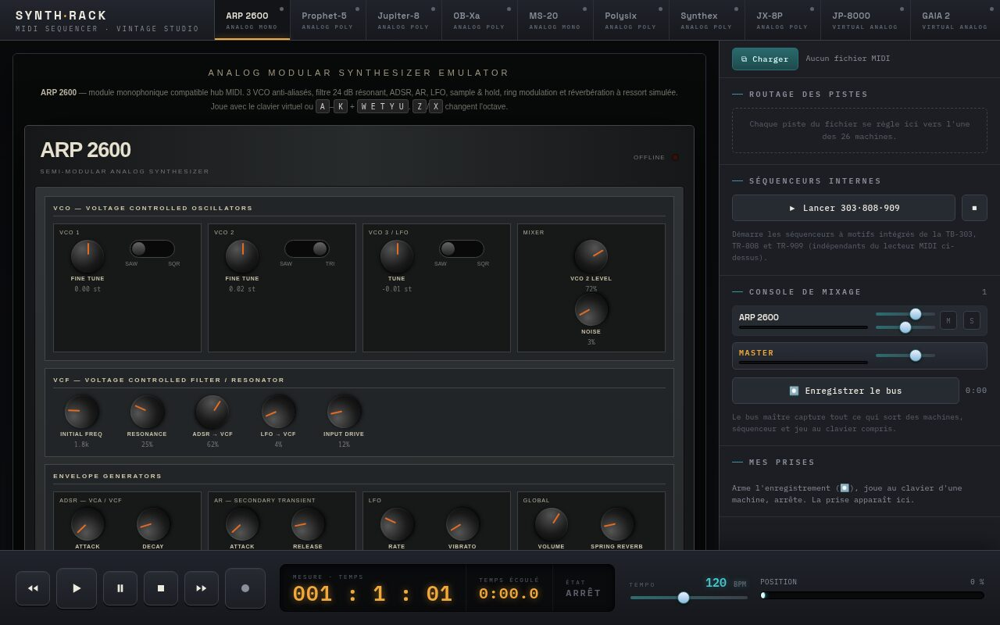

Synth Rack
Twenty-six vintage machines — from the ARP 2600 and the Prophet-5 to the TR-808 — that you play in a web browser, and a MIDI sequencer that plays a song through them. Plain HTML, CSS and JavaScript: no dependencies, no build, one file per machine.
Vingt-six machines vintage — de l’ARP 2600 et du Prophet-5 à la TR-808 — qui se jouent dans un navigateur, et un séquenceur MIDI qui leur fait jouer un morceau. Du HTML, du CSS et du JavaScript natifs : aucune dépendance, aucun build, un fichier par machine.
ម៉ាស៊ីន vintage ចំនួន 26 — ចាប់ពី ARP 2600 និង Prophet-5 រហូតដល់ TR-808 — ដែលអ្នកអាចលេងបាននៅក្នុង browser ព្រមទាំង MIDI sequencer មួយដែលចាក់បទភ្លេងតាមរយៈម៉ាស៊ីនទាំងនោះ។ សរសេរដោយ HTML, CSS និង JavaScript សុទ្ធ៖ គ្មាន dependencies គ្មាន build ហើយម៉ាស៊ីនមួយ ឯកសារមួយ។

A wall of synths in one browser tab.
Each machine is a single, self-contained .html file: its front panel, a sound engine written with the Web Audio API, and the code that lets it receive notes. Open one on its own and you play it with the mouse, the on-screen keyboard or the computer keyboard. Open the hub and the machines line up in tabs, under a MIDI sequencer that plays a .mid file through them: drum tracks go to the TR-909, and the other tracks are dealt out to the Prophet-5, the Jupiter-8, the ARP 2600 and the next ones, until you route them yourself.
There are no audio files in the repository: every sound is synthesized by code, in the browser — the drum machines and even the Fairlight’s “samples” included. Nothing needs installing: the project is a set of static files, and the live demo runs straight from GitHub Pages. The panels and help texts are in French.
Twenty-six machines.
| Family | Machines |
|---|---|
| Analog | ARP 2600 and Korg MS-20 (mono); Prophet-5, Jupiter-8, Oberheim OB-Xa, Korg Polysix, Elka Synthex, Roland JX-8P, Yamaha CS-50, CS-60, CS-80 and GX-1 (poly) |
| Virtual analog | Roland JP-8000, Roland GAIA 2, Yamaha Reface CS |
| Digital | Roland D-50 (LA synthesis), Fairlight CMI (sampler), Korg M1 and Novation MiniNova (PCM), Yamaha DX100 (4-operator FM), Arturia MicroFreak (hybrid) |
| Rhythm and acid | Roland TB-303 bass line, TR-808 and TR-909 drum machines, each with its own 16-step sequencer |
| Second versions | JP-8000 · worklet and MicroFreak · alt — other implementations of the same instruments, kept because they do not sound the same |
Polyphony goes from mono (ARP 2600, MS-20) to 5 voices on the Prophet-5, 8 on the Jupiter-8 and 64 on the GAIA 2. These are unofficial recreations; several panels say plainly that they are not affiliated with the manufacturer.
Load a song. Route it. Press play.
| Feature | What it does |
|---|---|
| MIDI files | Reads standard MIDI files (formats 0 and 1): notes, tempo and track names. |
| Routing | Each track of the file goes to one of the 26 machines and can be muted. Drum tracks (channel 10) start on the TR-909. |
| Transport | Play, pause, stop, 4 bars back or forward, and a position bar; shows bar · beat and elapsed time. Keys: Space, Enter, ← →. |
| Tempo | 40 to 220 BPM; the whole song is sped up or slowed down from its own tempo. |
| Takes | Arm ⏺, play on a machine’s keyboard, stop: the notes become a take that can be added back as a track or downloaded as a .mid file. |
| Built-in sequencers | One button starts or stops the pattern sequencers of the TB-303, TR-808 and TR-909 together, independently of the MIDI player. |
The rack comes in two editions with the same machines. They differ in one thing only: where the sound goes.
| classic/ | mixer/ | |
|---|---|---|
| Audio | Each machine has its own audio context, sealed in its iframe | One audio context shared by the whole rack |
| Mixing console | — | Fader (0 to 140 %), pan, mute, solo and level meter for each machine |
| Master bus | — | Master fader and meter |
| Recording | Not possible | Records everything on the master bus and downloads the file when you stop |
| Same origin | Recommended (to switch machines on automatically) | Required (to share the audio) |
classic suits playing the machines one at a time: each one is sealed off and can be copied elsewhere as is. mixer is for making them sound together; its recordings are .webm (Opus) on Chrome and Firefox and .m4a on Safari.
Old circuits, rebuilt in code.
One file, one machine
Every machine is a complete page: panel, sound engine, presets and keyboard. It opens on its own, works without the hub, and can be copied to another site with nothing else.
Two ways to make sound
Most machines are graphs of Web Audio nodes — oscillators, filters, amplifiers, and envelopes written as scheduled ramps. The ARP 2600, GAIA 2, JX-8P and the JP-8000 worklet compute every sample themselves in an AudioWorklet, which a ladder filter or oscillator sync calls for.
Drum machines that read MIDI
The TR-808 (16 voices) and the TR-909 (11 voices) are fully synthesized, with four banks of 16-step patterns and an accent track. A General MIDI drum map lets them play the drum tracks of a .mid file directly.
A real mixer in the browser
In the mixer edition the hub owns the rack’s only audio context and lends it to each machine. A machine still calls new AudioContext(), but its sound now lands on its own strip. Mute and solo are short fades, so they do not click.
Record what you play
Notes played on a machine’s keyboard become MIDI takes, exportable as .mid. The mixer edition also records the audio of the master bus: the sequencer, the drum machines’ own sequencers and keyboard playing included.
Loaded on demand
A machine is loaded only when its tab is shown, a track is routed to it or it is switched on. Playback waits up to 3 seconds for the machines involved to be ready, so the first notes are not lost.
Limits, as the project documents them: notes leave the sequencer at screen refresh (about every 16 ms), so fast patterns can jitter, and playback slows down when the tab is in the background; a song with tempo changes plays at one constant tempo; takes are kept in memory and disappear when the page is closed; not every machine reports what is played on its own keyboard, so not all of them can be recorded as takes; and in the mixer each machine has a single strip — the M1’s parts or the drum voices cannot be mixed separately.
Un mur de synthés dans un onglet.
Chaque machine tient dans un seul fichier .html autonome : sa façade, un moteur sonore écrit avec la Web Audio API, et le code qui lui permet de recevoir des notes. Ouverte seule, elle se joue à la souris, au clavier à l’écran ou au clavier de l’ordinateur. Dans le hub, les machines s’alignent en onglets sous un séquenceur MIDI qui leur fait jouer un fichier .mid : les pistes de batterie partent vers la TR-909, les autres sont distribuées au Prophet-5, au Jupiter-8, à l’ARP 2600 et aux suivantes, jusqu’à ce que vous les routiez vous-même.
Le dépôt ne contient aucun fichier audio : chaque son est synthétisé par le code, dans le navigateur — boîtes à rythmes et même « échantillons » du Fairlight compris. Rien à installer : le projet n’est fait que de fichiers statiques, et la démo tourne directement sur GitHub Pages. Les façades et les textes d’aide sont en français.
Vingt-six machines.
| Famille | Machines |
|---|---|
| Analogiques | ARP 2600 et Korg MS-20 (monophoniques) ; Prophet-5, Jupiter-8, Oberheim OB-Xa, Korg Polysix, Elka Synthex, Roland JX-8P, Yamaha CS-50, CS-60, CS-80 et GX-1 (polyphoniques) |
| Analogique virtuel | Roland JP-8000, Roland GAIA 2, Yamaha Reface CS |
| Numériques | Roland D-50 (synthèse LA), Fairlight CMI (échantillonneur), Korg M1 et Novation MiniNova (PCM), Yamaha DX100 (FM à 4 opérateurs), Arturia MicroFreak (hybride) |
| Rythme et acid | Roland TB-303 (ligne de basse), TR-808 et TR-909 (boîtes à rythmes), chacune avec son séquenceur à 16 pas |
| Variantes | JP-8000 · worklet et MicroFreak · alt — d’autres implémentations des mêmes instruments, gardées parce qu’elles ne sonnent pas pareil |
La polyphonie va du monophonique (ARP 2600, MS-20) à 5 voix sur le Prophet-5, 8 sur le Jupiter-8 et 64 sur la GAIA 2. Ce sont des recréations non officielles ; plusieurs façades précisent qu’elles ne sont pas affiliées au fabricant.
Chargez un morceau. Routez. Lecture.
| Fonction | Ce qu’elle fait |
|---|---|
| Fichiers MIDI | Lit les fichiers MIDI standard (formats 0 et 1) : notes, tempo et noms de pistes. |
| Routage | Chaque piste du fichier va vers l’une des 26 machines et peut être coupée. Les pistes de batterie (canal 10) partent d’office vers la TR-909. |
| Transport | Lecture, pause, stop, 4 mesures en arrière ou en avant, barre de position ; affichage mesure · temps et temps écoulé. Touches : Espace, Entrée, ← →. |
| Tempo | De 40 à 220 BPM ; tout le morceau est accéléré ou ralenti par rapport à son propre tempo. |
| Prises | Armez ⏺, jouez au clavier d’une machine, arrêtez : les notes deviennent une prise, à réinjecter comme piste ou à télécharger en fichier .mid. |
| Séquenceurs internes | Un bouton lance ou arrête ensemble les séquenceurs à motifs de la TB-303, de la TR-808 et de la TR-909, indépendamment du lecteur MIDI. |
Le rack existe en deux éditions, avec les mêmes machines. Elles ne diffèrent que sur un point : le chemin du son.
| classic/ | mixer/ | |
|---|---|---|
| Audio | Un contexte audio par machine, enfermé dans son iframe | Un seul contexte audio pour tout le rack |
| Console de mixage | — | Fader (0 à 140 %), panoramique, mute, solo et vu-mètre pour chaque machine |
| Bus maître | — | Fader et vu-mètre maîtres |
| Enregistrement | Impossible | Capture tout ce qui passe par le bus maître et télécharge le fichier à l’arrêt |
| Même origine | Conseillée (pour allumer les machines automatiquement) | Obligatoire (pour partager l’audio) |
classic convient pour jouer les machines une par une : chacune est étanche et se copie ailleurs telle quelle. mixer sert à les faire sonner ensemble ; ses enregistrements sont en .webm (Opus) sur Chrome et Firefox, en .m4a sur Safari.
De vieux circuits, refaits en code.
Un fichier, une machine
Chaque machine est une page complète : façade, moteur sonore, presets et clavier. Elle s’ouvre seule, fonctionne sans le hub et se copie sur un autre site sans rien d’autre.
Deux façons de faire du son
La plupart des machines sont des graphes de nœuds Web Audio — oscillateurs, filtres, amplis, et enveloppes écrites en rampes planifiées. L’ARP 2600, la GAIA 2, la JX-8P et le JP-8000 « worklet » calculent eux-mêmes chaque échantillon dans un AudioWorklet, ce qu’exigent un filtre en échelle ou la synchronisation d’oscillateurs.
Des boîtes à rythmes qui lisent le MIDI
La TR-808 (16 voix) et la TR-909 (11 voix) sont entièrement synthétisées, avec quatre banques de motifs de 16 pas et une piste d’accent. Une table de batterie General MIDI leur fait jouer directement les pistes de batterie d’un fichier .mid.
Une vraie console dans le navigateur
Dans l’édition mixer, le hub possède l’unique contexte audio du rack et le prête à chaque machine. La machine appelle toujours new AudioContext(), mais son son arrive désormais sur sa propre tranche. Mute et solo sont de courts fondus : ils ne claquent pas.
Enregistrer ce que l’on joue
Les notes jouées au clavier d’une machine deviennent des prises MIDI, exportables en .mid. L’édition mixer enregistre en plus l’audio du bus maître : séquenceur, séquenceurs internes des boîtes à rythmes et jeu au clavier compris.
Chargé à la demande
Une machine n’est chargée que lorsque son onglet s’affiche, qu’une piste lui est routée ou qu’elle est allumée. La lecture attend jusqu’à 3 secondes que les machines concernées soient prêtes, pour ne pas perdre les premières notes.
Les limites, telles que le projet les documente : les notes partent du séquenceur au rythme de l’affichage (environ toutes les 16 ms), si bien que les motifs rapides peuvent flotter, et la lecture ralentit quand l’onglet passe en arrière-plan ; un morceau à tempo variable est joué à tempo constant ; les prises restent en mémoire et disparaissent à la fermeture de la page ; toutes les machines ne signalent pas ce qu’on joue sur leur propre clavier, et toutes ne peuvent donc pas être enregistrées en prises ; enfin, dans le mixer, chaque machine n’a qu’une tranche — les parties du M1 ou les voix des boîtes à rythmes ne se mixent pas séparément.
ជញ្ជាំង synth ទាំងមូល ក្នុង tab browser តែមួយ។
ម៉ាស៊ីននីមួយៗស្ថិតនៅក្នុងឯកសារ .html តែមួយ ដែលដំណើរការដោយខ្លួនឯង៖ ផ្ទាំងបញ្ជារបស់វា ម៉ាស៊ីនបង្កើតសំឡេងដែលសរសេរដោយ Web Audio API និងកូដដែលអនុញ្ញាតឱ្យវាទទួលណូតភ្លេង។ បើកវាតែឯង អ្នកអាចលេងវាដោយ mouse ក្តារចុចនៅលើអេក្រង់ ឬក្តារចុចកុំព្យូទ័រ។ បើក hub ម៉ាស៊ីនទាំងអស់តម្រៀបគ្នាជា tabs នៅក្រោម MIDI sequencer មួយ ដែលចាក់ឯកសារ .mid តាមរយៈម៉ាស៊ីនទាំងនោះ៖ tracks ស្គរទៅកាន់ TR-909 ហើយ tracks ផ្សេងទៀតត្រូវបានចែកទៅ Prophet-5, Jupiter-8, ARP 2600 និងម៉ាស៊ីនបន្តបន្ទាប់ រហូតដល់អ្នកកំណត់ផ្លូវដោយខ្លួនឯង។
នៅក្នុងឃ្លាំងកូដ គ្មានឯកសារសំឡេងណាមួយទេ៖ សំឡេងទាំងអស់ត្រូវបានសំយោគដោយកូដ នៅក្នុង browser — រួមទាំងម៉ាស៊ីនស្គរ និងសូម្បីតែ “samples” របស់ Fairlight ផងដែរ។ មិនចាំបាច់ដំឡើងអ្វីទេ៖ គម្រោងនេះមានតែឯកសារ static ហើយការបង្ហាញផ្ទាល់ដំណើរការដោយផ្ទាល់ពី GitHub Pages។ ផ្ទាំងបញ្ជា និងអត្ថបទជំនួយ សរសេរជាភាសាបារាំង។
ម៉ាស៊ីនចំនួន 26។
| ប្រភេទ | ម៉ាស៊ីន |
|---|---|
| អាណាឡូក | ARP 2600 និង Korg MS-20 (mono); Prophet-5, Jupiter-8, Oberheim OB-Xa, Korg Polysix, Elka Synthex, Roland JX-8P, Yamaha CS-50, CS-60, CS-80 និង GX-1 (poly) |
| អាណាឡូកនិម្មិត | Roland JP-8000, Roland GAIA 2, Yamaha Reface CS |
| ឌីជីថល | Roland D-50 (ការសំយោគ LA), Fairlight CMI (sampler), Korg M1 និង Novation MiniNova (PCM), Yamaha DX100 (FM 4 operators), Arturia MicroFreak (hybrid) |
| ចង្វាក់ និង acid | Roland TB-303 (ខ្សែបាស), TR-808 និង TR-909 (ម៉ាស៊ីនស្គរ) ដែលនីមួយៗមាន sequencer 16 ជំហានផ្ទាល់ខ្លួន |
| កំណែទីពីរ | JP-8000 · worklet និង MicroFreak · alt — ការសរសេរឡើងវិញមួយទៀតនៃឧបករណ៍ដដែល ដែលត្រូវបានរក្សាទុក ព្រោះសំឡេងរបស់វាមិនដូចគ្នា |
ចំនួនសំឡេងដែលអាចលេងព្រមគ្នា (polyphony) មានចាប់ពី mono (ARP 2600, MS-20) រហូតដល់ 5 សំឡេងលើ Prophet-5, 8 លើ Jupiter-8 និង 64 លើ GAIA 2។ ទាំងនេះជាការបង្កើតឡើងវិញក្រៅផ្លូវការ ហើយផ្ទាំងបញ្ជាមួយចំនួនបញ្ជាក់យ៉ាងច្បាស់ថា វាមិនមានទំនាក់ទំនងជាមួយក្រុមហ៊ុនផលិតទេ។
ផ្ទុកបទភ្លេង។ កំណត់ផ្លូវ។ ចុច Play។
| មុខងារ | អ្វីដែលវាធ្វើ |
|---|---|
| ឯកសារ MIDI | អានឯកសារ MIDI ស្តង់ដារ (format 0 និង 1)៖ ណូត tempo និងឈ្មោះ tracks។ |
| ការកំណត់ផ្លូវ | track នីមួយៗនៃឯកសារ ត្រូវបានបញ្ជូនទៅម៉ាស៊ីនមួយក្នុងចំណោម 26 ហើយអាចបិទសំឡេង (mute) បាន។ tracks ស្គរ (channel 10) ទៅកាន់ TR-909 ដោយស្វ័យប្រវត្តិ។ |
| Transport | Play, pause, stop, ថយក្រោយ ឬទៅមុខ 4 bars និងរបារទីតាំង ព្រមទាំងបង្ហាញ bar · beat និងពេលវេលាដែលបានកន្លងទៅ។ គ្រាប់ចុច៖ Space, Enter, ← →។ |
| Tempo | ពី 40 ដល់ 220 BPM៖ បទទាំងមូលត្រូវបានធ្វើឱ្យលឿន ឬយឺត ធៀបនឹង tempo ដើមរបស់វា។ |
| Takes | ចុច ⏺ លេងលើក្តារចុចរបស់ម៉ាស៊ីនណាមួយ រួចបញ្ឈប់៖ ណូតទាំងនោះក្លាយជា take មួយ ដែលអាចបញ្ចូលវិញជា track ឬទាញយកជាឯកសារ .mid។ |
| Sequencers ដែលមានស្រាប់ | ប៊ូតុងតែមួយបើក ឬបញ្ឈប់ sequencers លំនាំ (pattern) របស់ TB-303, TR-808 និង TR-909 ព្រមគ្នា ដោយឯករាជ្យពីកម្មវិធីចាក់ MIDI។ |
រ៉ាក់នេះមានពីរកំណែ ដែលមានម៉ាស៊ីនដូចគ្នា។ ពួកវាខុសគ្នាតែមួយចំណុចប៉ុណ្ណោះ៖ ផ្លូវដែលសំឡេងធ្វើដំណើរ។
| classic/ | mixer/ | |
|---|---|---|
| អូឌីយ៉ូ | ម៉ាស៊ីននីមួយៗមាន audio context ផ្ទាល់ខ្លួន ដែលនៅដាច់ដោយឡែកក្នុង iframe របស់វា | audio context តែមួយ សម្រាប់រ៉ាក់ទាំងមូល |
| តុលាយសំឡេង | — | fader (0 ដល់ 140 %), pan, mute, solo និងម៉ែត្រកម្រិតសំឡេង សម្រាប់ម៉ាស៊ីននីមួយៗ |
| Master bus | — | fader និងម៉ែត្រ master |
| ការថតសំឡេង | មិនអាចធ្វើបាន | ថតអ្វីៗទាំងអស់ដែលឆ្លងកាត់ master bus ហើយទាញយកឯកសារនៅពេលបញ្ឈប់ |
| Origin ដូចគ្នា | ណែនាំ (ដើម្បីបើកម៉ាស៊ីនដោយស្វ័យប្រវត្តិ) | ចាំបាច់ (ដើម្បីចែករំលែកអូឌីយ៉ូ) |
classic សមសម្រាប់លេងម៉ាស៊ីនម្តងមួយៗ៖ ម៉ាស៊ីននីមួយៗនៅដាច់ដោយឡែក ហើយអាចចម្លងទៅកន្លែងផ្សេងបានដូចដើម។ mixer គឺសម្រាប់ឱ្យម៉ាស៊ីនច្រើនបន្លឺសំឡេងជាមួយគ្នា ហើយឯកសារដែលថតបានជា .webm (Opus) នៅលើ Chrome និង Firefox និង .m4a នៅលើ Safari។
សៀគ្វីចាស់ៗ បង្កើតឡើងវិញដោយកូដ។
ឯកសារមួយ ម៉ាស៊ីនមួយ
ម៉ាស៊ីននីមួយៗជាទំព័រពេញលេញ៖ ផ្ទាំងបញ្ជា ម៉ាស៊ីនបង្កើតសំឡេង presets និងក្តារចុច។ វាបើកតែឯងបាន ដំណើរការដោយគ្មាន hub និងអាចចម្លងទៅគេហទំព័រផ្សេង ដោយមិនត្រូវការអ្វីបន្ថែម។
វិធីពីរយ៉ាងក្នុងការបង្កើតសំឡេង
ម៉ាស៊ីនភាគច្រើនជាបណ្តាញនៃ nodes Web Audio — oscillators, filters, amplifiers និង envelopes ដែលសរសេរជា ramps កំណត់ពេលទុកជាមុន។ ARP 2600, GAIA 2, JX-8P និង JP-8000 worklet គណនា sample នីមួយៗដោយខ្លួនឯងនៅក្នុង AudioWorklet ដែលជាការចាំបាច់សម្រាប់ ladder filter ឬ oscillator sync។
ម៉ាស៊ីនស្គរដែលអាន MIDI
TR-808 (16 សំឡេង) និង TR-909 (11 សំឡេង) ត្រូវបានសំយោគទាំងស្រុងដោយកូដ ជាមួយលំនាំ 16 ជំហាន ក្នុង 4 banks និង track សម្រាប់ accent។ តារាងស្គរ General MIDI អនុញ្ញាតឱ្យវាចាក់ tracks ស្គររបស់ឯកសារ .mid ដោយផ្ទាល់។
តុលាយសំឡេងពិតប្រាកដក្នុង browser
នៅក្នុងកំណែ mixer, hub ជាម្ចាស់ audio context តែមួយគត់របស់រ៉ាក់ ហើយខ្ចីវាឱ្យម៉ាស៊ីននីមួយៗ។ ម៉ាស៊ីននៅតែហៅ new AudioContext() ដដែល ប៉ុន្តែសំឡេងរបស់វាឥឡូវទៅដល់ strip ផ្ទាល់ខ្លួន។ mute និង solo គឺជាការបន្ថយ ឬបង្កើនសំឡេងយ៉ាងរលូនក្នុងរយៈពេលខ្លី ដូច្នេះមិនបង្កើតសំឡេង click ទេ។
ថតអ្វីដែលអ្នកលេង
ណូតដែលលេងលើក្តារចុចរបស់ម៉ាស៊ីន ក្លាយជា takes MIDI ដែលអាច export ជា .mid បាន។ កំណែ mixer ថែមទាំងថតសំឡេងពី master bus ទៀតផង រួមទាំង sequencer, sequencers ផ្ទាល់ខ្លួនរបស់ម៉ាស៊ីនស្គរ និងការលេងលើក្តារចុច។
ផ្ទុកតែពេលត្រូវការ
ម៉ាស៊ីនមួយត្រូវបានផ្ទុក តែនៅពេលដែល tab របស់វាត្រូវបានបើក មាន track បញ្ជូនមកវា ឬវាត្រូវបានបើកដំណើរការប៉ុណ្ណោះ។ ការចាក់រង់ចាំរហូតដល់ 3 វិនាទី ឱ្យម៉ាស៊ីនពាក់ព័ន្ធត្រៀមរួចរាល់ ដើម្បីកុំឱ្យបាត់ណូតដំបូងៗ។
ដែនកំណត់ ដូចដែលគម្រោងបានកត់ត្រាទុក៖ ណូតចេញពី sequencer តាមល្បឿននៃការធ្វើបច្ចុប្បន្នភាពអេក្រង់ (ប្រហែលរៀងរាល់ 16 ms) ដូច្នេះលំនាំលឿនៗអាចមិនទៀងចង្វាក់ ហើយការចាក់យឺតទៅវិញនៅពេល tab នៅខាងក្រោយ។ បទដែលប្តូរ tempo ត្រូវបានចាក់ក្នុង tempo ថេរតែមួយ។ takes ត្រូវបានរក្សាទុកតែក្នុង memory ហើយបាត់ទៅវិញនៅពេលបិទទំព័រ។ មិនមែនម៉ាស៊ីនទាំងអស់សុទ្ធតែរាយការណ៍អំពីអ្វីដែលលេងលើក្តារចុចផ្ទាល់ខ្លួនរបស់វានោះទេ ដូច្នេះមិនមែនទាំងអស់អាចថតជា takes បានទេ។ ហើយនៅក្នុង mixer ម៉ាស៊ីននីមួយៗមាន strip តែមួយ — parts របស់ M1 ឬសំឡេងនីមួយៗរបស់ម៉ាស៊ីនស្គរ មិនអាចលាយដាច់ដោយឡែកពីគ្នាបានទេ។
The rack in pictures.Le rack en images.រ៉ាក់តាមរយៈរូបភាព។
How it is built.
| index.html | The hub: a hand-written MIDI file reader (formats 0 and 1) and .mid writer, the routing matrix, the transport clock and the takes. In the mixer edition it also owns the rack’s only AudioContext, the strips, the master bus and the recorder. |
| Machines | 26 .html files, from a few hundred to 5,000 lines each. Each holds a manifest, its voices and presets, its MIDI handling, a panic, and its interface: SVG knobs, an on-screen keyboard and the computer keyboard. |
| Protocol | The hub talks to each machine, loaded in an iframe, with plain postMessage messages: init, note-on, note-off, all-notes-off, panic… A machine answers ready when its engine runs and midi-out when you play on it. No sound is made before init, in line with the browsers’ autoplay rules. |
| Synthesis | Web Audio nodes for most machines; an AudioWorklet processor, loaded from a Blob, for the ARP 2600, GAIA 2, JX-8P and JP-8000 worklet. |
| Mixer bridge | A few dozen lines in the <head> of each machine: it asks the hub for a strip and replaces window.AudioContext with a Proxy of the hub’s context whose destination is that strip. Outside the hub it does nothing, and the machine makes its own context. |
| Docs | A README and an architecture.md for each edition, in French. |
To run it locally, serve the folder over HTTP (the iframes do not work from file://):
$ python3 -m http.server 8080 # http://localhost:8080/classic/ or http://localhost:8080/mixer/
Comment c’est construit.
| index.html | Le hub : un lecteur de fichiers MIDI (formats 0 et 1) et un writer .mid écrits à la main, la matrice de routage, l’horloge du transport et les prises. Dans l’édition mixer, il possède aussi l’unique AudioContext du rack, les tranches, le bus maître et l’enregistreur. |
| Machines | 26 fichiers .html, de quelques centaines à 5 000 lignes chacun. Chacun contient un manifeste, ses voix et ses presets, sa gestion du MIDI, un panic, et son interface : potentiomètres SVG, clavier à l’écran et clavier de l’ordinateur. |
| Protocole | Le hub parle à chaque machine, chargée dans une iframe, par de simples messages postMessage : init, note-on, note-off, all-notes-off, panic… La machine répond ready quand son moteur tourne et midi-out quand on joue dessus. Aucun son avant init, conformément aux règles d’autoplay des navigateurs. |
| Synthèse | Des nœuds Web Audio pour la plupart des machines ; un processeur AudioWorklet, chargé depuis un Blob, pour l’ARP 2600, la GAIA 2, la JX-8P et le JP-8000 « worklet ». |
| Pont mixer | Quelques dizaines de lignes dans le <head> de chaque machine : il réclame une tranche au hub et remplace window.AudioContext par un Proxy du contexte du hub dont la destination est cette tranche. Hors du hub, il ne fait rien et la machine crée son propre contexte. |
| Docs | Un README et un architecture.md par édition, en français. |
Pour le lancer en local, servez le dossier en HTTP (les iframes ne fonctionnent pas en file://) :
$ python3 -m http.server 8080 # http://localhost:8080/classic/ ou http://localhost:8080/mixer/
របៀបដែលវាត្រូវបានបង្កើត។
| index.html | hub៖ កម្មវិធីអានឯកសារ MIDI (format 0 និង 1) និងកម្មវិធីសរសេរ .mid ដែលសរសេរដោយដៃ matrix កំណត់ផ្លូវ នាឡិកា transport និង takes។ នៅក្នុងកំណែ mixer វាក៏ជាម្ចាស់ AudioContext តែមួយគត់របស់រ៉ាក់ strips, master bus និងឧបករណ៍ថតសំឡេងផងដែរ។ |
| ម៉ាស៊ីន | ឯកសារ .html ចំនួន 26 ដែលនីមួយៗមានពីរាប់រយ ដល់ 5,000 បន្ទាត់។ ឯកសារនីមួយៗមាន manifest, voices, presets, ការគ្រប់គ្រង MIDI, panic និងផ្ទាំងប្រើប្រាស់៖ knobs SVG ក្តារចុចនៅលើអេក្រង់ និងក្តារចុចកុំព្យូទ័រ។ |
| Protocol | hub ទាក់ទងជាមួយម៉ាស៊ីននីមួយៗ ដែលផ្ទុកក្នុង iframe តាមរយៈសារ postMessage សាមញ្ញ៖ init, note-on, note-off, all-notes-off, panic… ម៉ាស៊ីនឆ្លើយតបវិញដោយ ready នៅពេលម៉ាស៊ីនសំឡេងរបស់វាដំណើរការ និង midi-out នៅពេលអ្នកលេងលើវា។ គ្មានសំឡេងណាមួយចេញមុន init ទេ ស្របតាមច្បាប់ autoplay របស់ browsers។ |
| ការសំយោគ | nodes Web Audio សម្រាប់ម៉ាស៊ីនភាគច្រើន និង processor AudioWorklet ដែលផ្ទុកពី Blob សម្រាប់ ARP 2600, GAIA 2, JX-8P និង JP-8000 worklet។ |
| ស្ពាន mixer | កូដប៉ុន្មានដប់បន្ទាត់នៅក្នុង <head> របស់ម៉ាស៊ីននីមួយៗ៖ វាស្នើសុំ strip មួយពី hub ហើយជំនួស window.AudioContext ដោយ Proxy នៃ context របស់ hub ដែល destination របស់វាគឺ strip នោះ។ នៅក្រៅ hub វាមិនធ្វើអ្វីទេ ហើយម៉ាស៊ីនបង្កើត context ផ្ទាល់ខ្លួន។ |
| ឯកសារ | README និង architecture.md សម្រាប់កំណែនីមួយៗ ជាភាសាបារាំង។ |
ដើម្បីដំណើរការនៅលើកុំព្យូទ័ររបស់អ្នក ត្រូវបម្រើថតឯកសារតាម HTTP (iframes មិនដំណើរការតាម file:// ទេ)៖
$ python3 -m http.server 8080 # http://localhost:8080/classic/ ឬ http://localhost:8080/mixer/